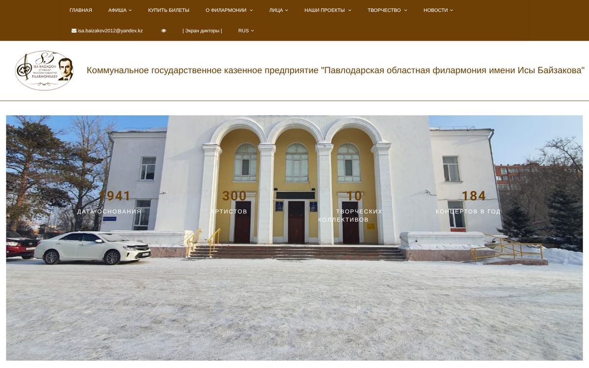
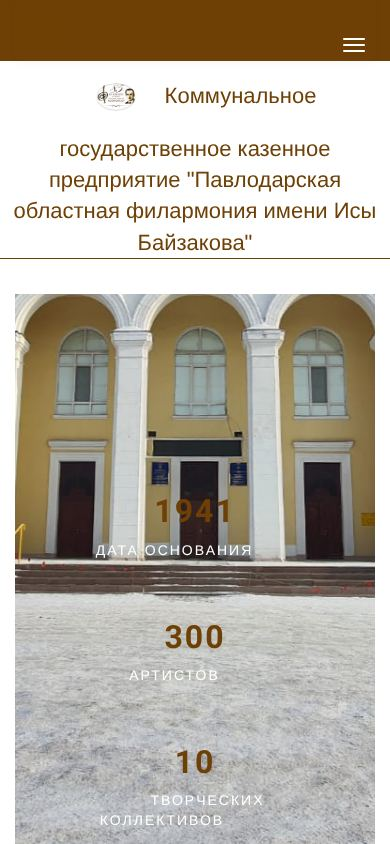
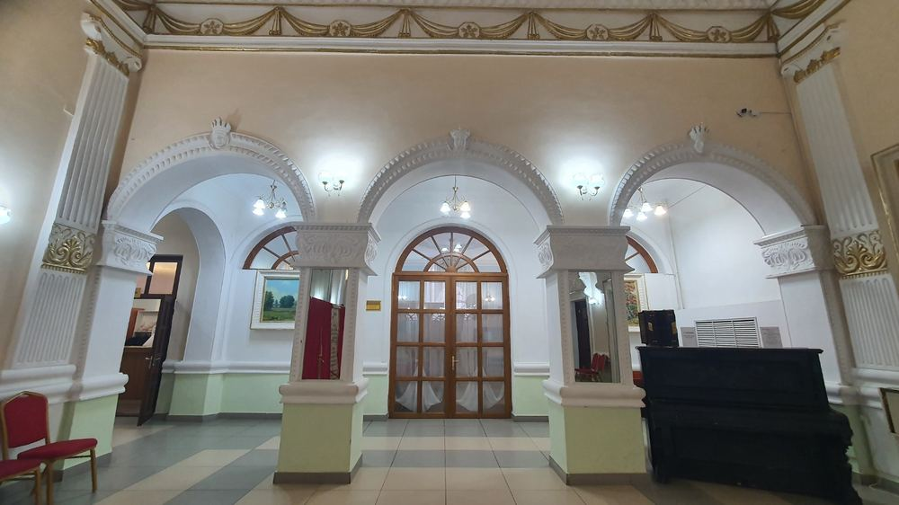
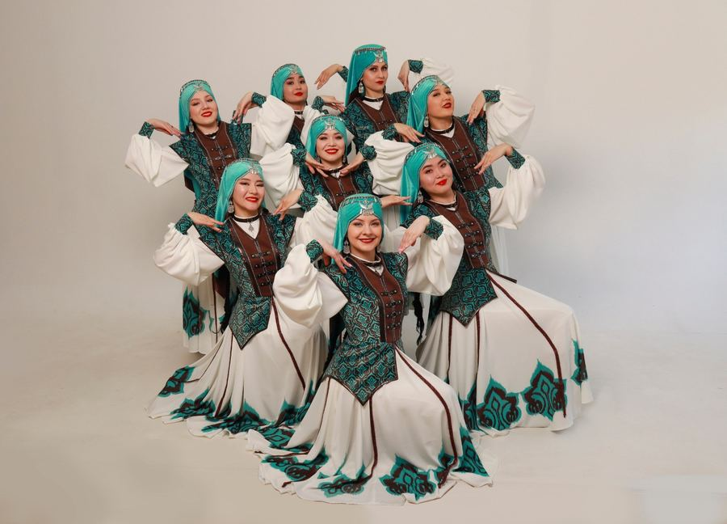
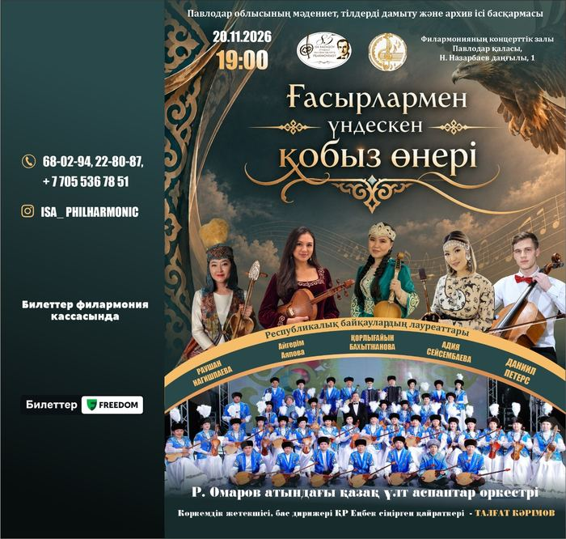
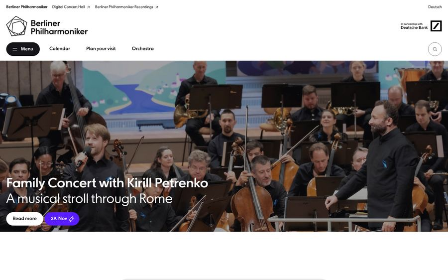
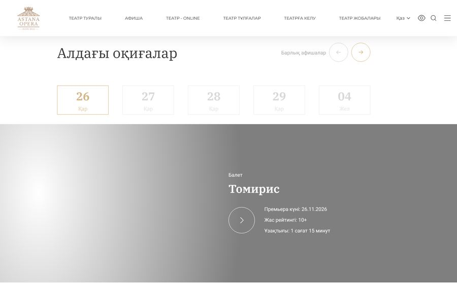

Анализ текущего сайта isa-philharmonic.kz, план лендинга и каркас главной страницы. Каркас серый намеренно: сначала договариваемся о структуре и порядке, потом рисуем дизайн.
Сайт открывается, но не отвечает на два главных вопроса: что идёт в ближайшие дни и как купить билет. Афиша на главной пустая, вместо неё около 900 пикселей белого поля.


Блок «Афиша» на главной пустой. Раздел «Репертуар» состоит из картинок-афиш без текста: дату и название нельзя найти поиском, прочитать скринридером или скопировать.
«Купить билеты» ведёт на промежуточную страницу loc_tiketon.php, она не загрузилась за 45 секунд. На самих афишах написано «Билеты: Freedom» и «в кассе филармонии», на сайте этого нет.
На 390 px первый экран занимает название «Коммунальное государственное казённое предприятие…». Цифры поверх фото наезжают друг на друга.
Две строки меню, восемь выпадающих списков, около 40 пунктов, всё заглавными. Рядом e-mail, «Экран дикторы» и переключатель языка. Комплаенс и «Госсфера» стоят в одном ряду с афишей.
Фасад с припаркованной машиной, коричневые цифры на снегу плохо читаются. Число концертов в год меняется между слайдами: 184, 196, 208.
У страницы не указан язык (lang), нет описания для поиска и соцсетей. Шрифты Roboto и Pacifico, иконки FontAwesome. Фото называются «WhatsApp Image 2026-…».
Здание 1963 года, памятник архитектуры. Зал на 428 мест, люстра, единственная такая в Павлодаре, фойе в стиле рококо. Восемь коллективов с хорошими постановочными фото, девять худруков с именами, история с 1941 года с архивными документами, юбилейный 85-й сезон.




Первый экран посвящён ближайшему концерту, кнопка билета показывает дату. Ниже календарь с фильтрами по жанрам.

Ближайшие даты стоят сразу под шапкой. Казахский язык по умолчанию, русский переключается в один клик.
У Эльбфилармонии в меню три пункта, по вопросам зрителя: что идёт, как прийти, какие залы. Так же делаем и мы.
Павлодарец открывает сайт с телефона и за один экран видит ближайший концерт. Через два касания он уже на странице оплаты.
Вторая задача: показать, что у города есть зал-памятник и коллектив с 85-летней историей. Это повод прийти, даже если человек не знает программы.
Фиолетовую палитру и шаблонные шрифты, которые предложила база ui-ux-pro-max, не берём. Цвета взяты из здания и костюмов, а не из трендов.
Логотип «85», четыре пункта: Афиша, Коллективы, Зал, Посетителям. ҚАЗ / РУС. Кнопка «Купить билет».
Фото концерта во весь экран, имя филармонии, «428 мест · 85-й сезон». Карточка ближайшего концерта с кнопкой.
Список, не карусель. Месяцы и жанры: симфоническая, народная, джаз, хор, танец, детям. В каждой строке дата, название, коллектив, цена «от» и кнопка «Билеты».
Восемь коллективов: два крупно (симфонический и оркестр им. Омарова), шесть меньше. Фото и худрук.
Яркое место страницы. Фото в арочной рамке меняются по мере прокрутки: 1963 год, фойе, люстра, 428 мест, сцена 8 × 8 м.
Тёмный блок: крупное «85», портрет Исы Байзакова, шесть дат с 1941 по 2026 год.
Самға, Тағылым, Ән аманат, Алтын бесік. Три последние новости.
Как купить: касса или онлайн. Как добраться: проспект Назарбаева, 1. Правила, дети, доступность.
Контакты, соцсети. Комплаенс, Госсфера и вакансии переезжают сюда из шапки.
На телефоне внизу всегда видна кнопка «Купить билет». Анимации: одно появление главного экрана при загрузке и смена фото в главе «Зал». Никаких каруселей, плавающих блоков и мигания.
Один файл, CSS и немного JS.
Статический сайт, афиша лежит в одной таблице (JSON или Google-таблица).
Полноценная админка для афиши, новостей, коллективов.
Эта страница. Согласуем порядок блоков и что в них.
Главный экран и афиша, на ноутбуке и телефоне, в цвете и с реальными фото.
ҚАЗ и РУС, афиша из таблицы.
Taste-gate в браузере на 1440, 1024, 768, 390 и 320 px, контраст, клавиатура, скорость.
Vercel или хостинг филармонии, перенос домена.
Серые блоки — фото, красные строки — заметки к блоку. Переключите на телефон, чтобы увидеть мобильную версию. Даты и цены в афише приведены для примера.
Концертный зал на 428 мест на проспекте Назарбаева, 1. Симфоническая и народная музыка, джаз, хор и танец.
Иса Байзаков (1900–1946): акын, поэт, композитор. Его имя филармония носит с 1971 года.